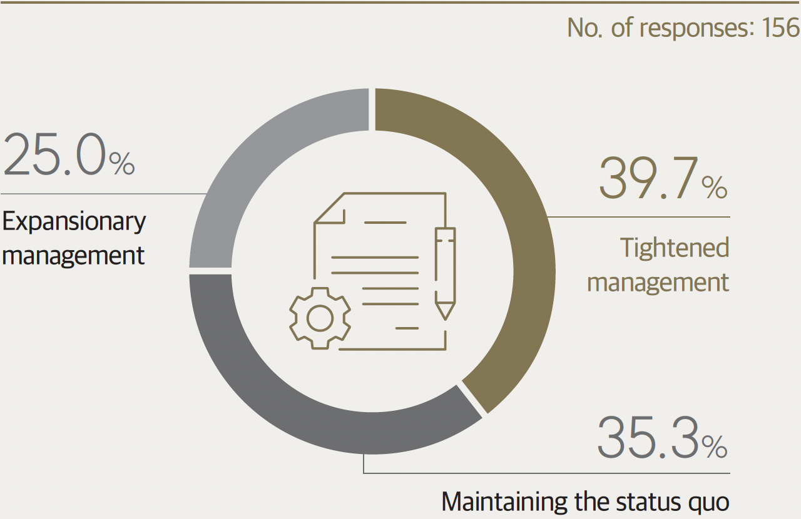
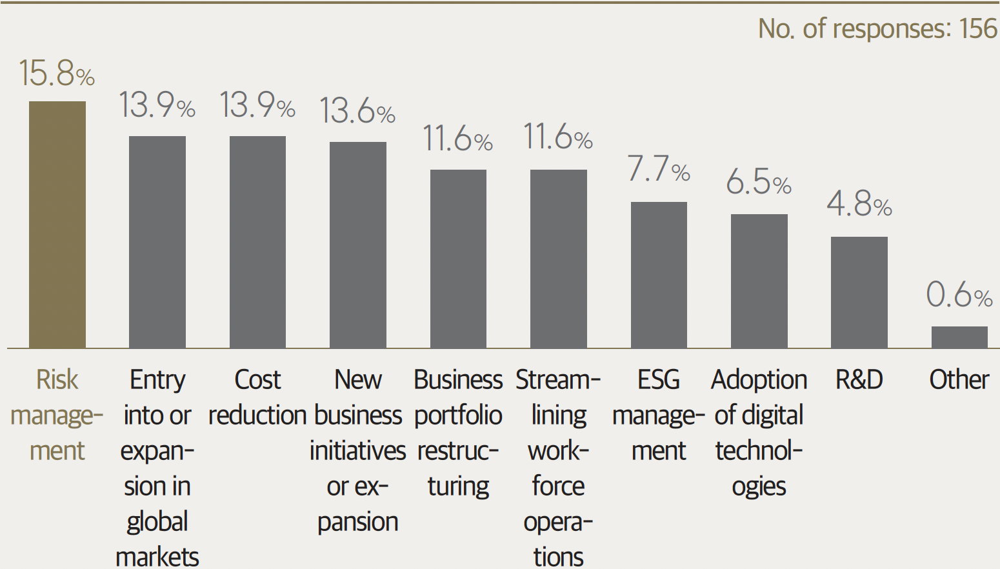
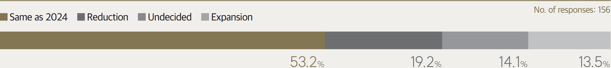
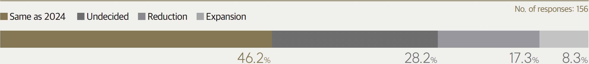
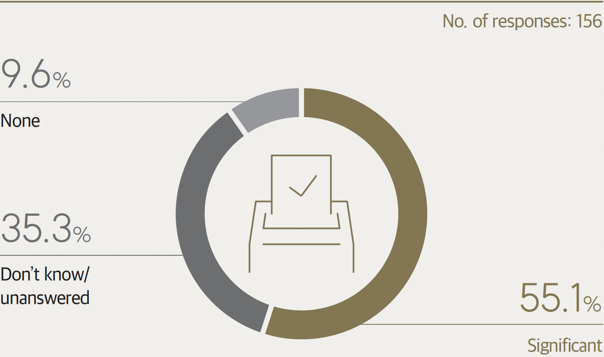
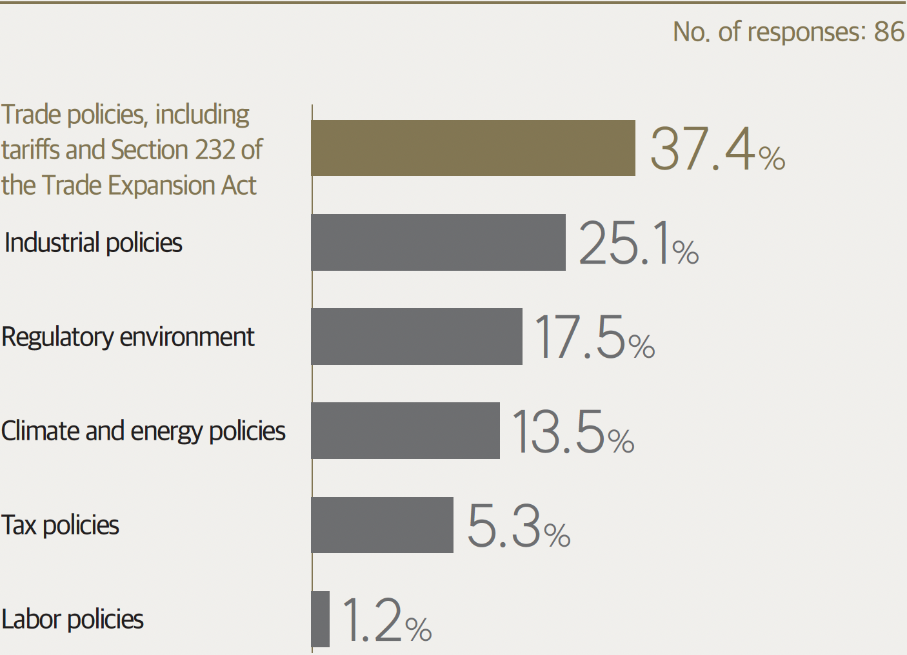

2025 Economic Outlook
2025 Economic Outlook:
From the Perspective
of FKI Member Companies
The Federation of Korean Industries (FKI) conducted a survey of its member companies to gather insights on their economic and business expectations for 2025.
Target FKI member companies (156 respondents)
Period Nov. 13 – Dec. 6, 2024
Surveyor Research & Research
Method Online survey using a structured questionnaire
Margin of error ±7.14%p at a 95% confidence interval
Q1. Factors expected to have the greatest impact on Korea’s economy in 2025 (Ranked 1–3)
Q2. Management approach for 2025
Q3. Keywords of management strategies in 2025 (Ranked 1–2)
Q4. External environmental factors expected to significantly impact business performance in 2025 (Ranked 1–2)
Q5. Investment plan for 2025 compared to 2024
Q5-1. Primary reason for investment expansion plan
Q5-2. Primary reason for investment reduction plan
Q6. Key investment areas (Ranked 1–2)
Q7. Hiring plan for 2025 compared to 2024
Q7-1. Primary reason for hiring expansion plan
Q7-2. Primary reason for hiring reduction plan
Q8. Expectations for the corporate regulatory environment in 2025
Q9. Top concerns (threats) related to economic security
Q10. Impact of US presidential election results on the formulation of 2025 management strategies
Q10-1. Key areas expected to be affected (Ranked 1–2)
Q11. Government policy priorities to enhance global competitiveness (Ranked 1–2)